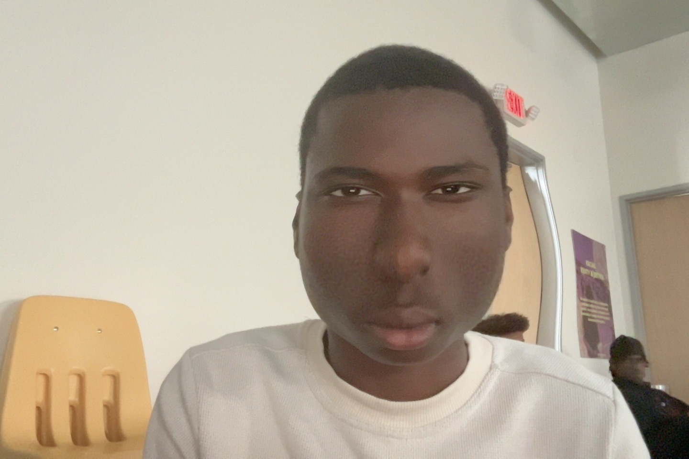
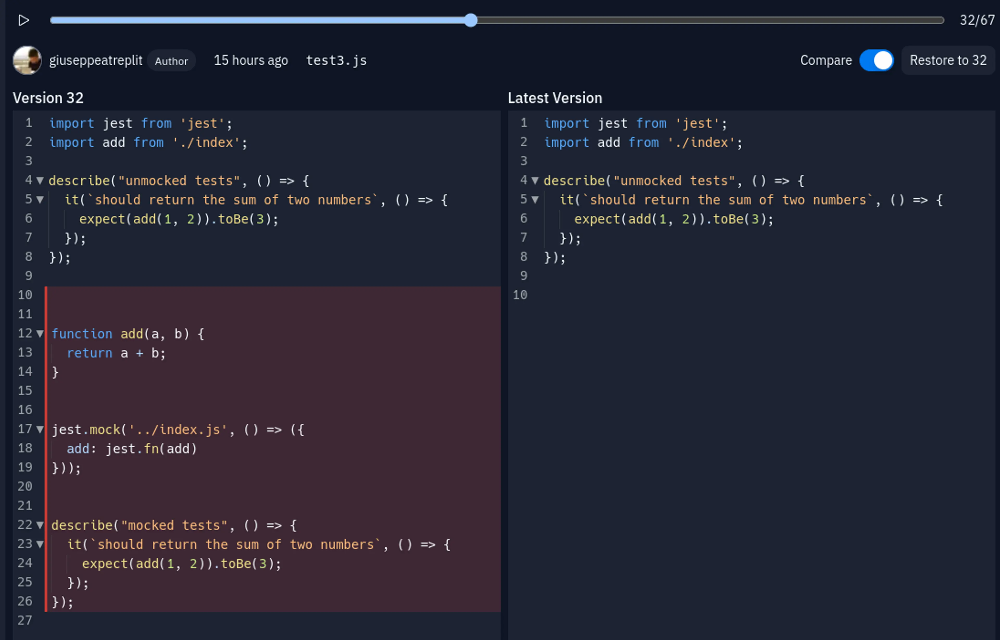

About Me
Hello! I'm Madou Yansane, born in 2008 and currently living in Richmond, California. I'm a student at Richmond High School (RHS), where I'm learning Python and HTML. I'm passionate about technology and coding, and I'm excited to showcase my skills and projects through this portfolio.
My journey into programming has been both challenging and rewarding. I've been focusing on web development and programming with Python, and I'm eager to learn and grow in these fields. My goal is to build innovative solutions and contribute to exciting projects.
My Work
Project 1

This project showcases my ability to create responsive web designs and implement interactive features using HTML and CSS.
Replit
In this project, I used Python to practice and develop my understanding of programming concepts and problem-solving skills.